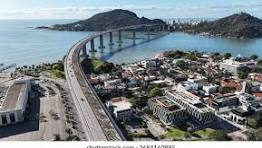
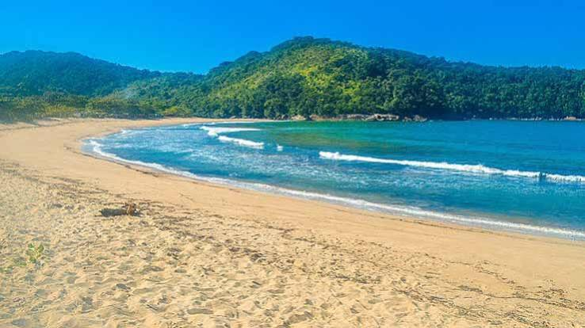
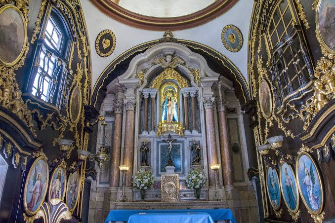
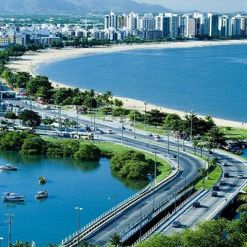
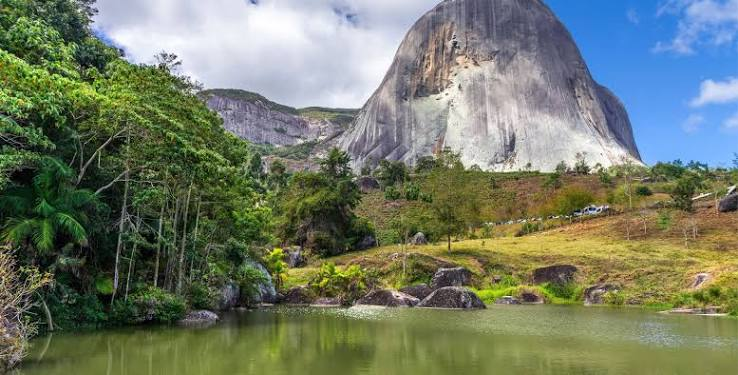
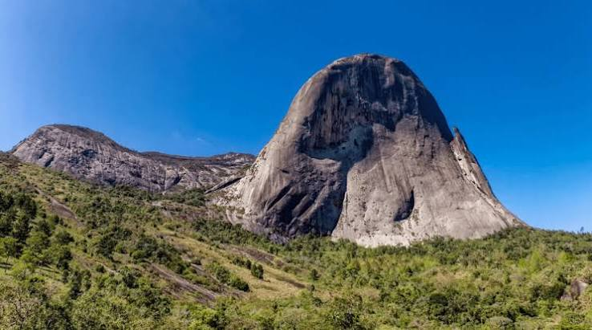
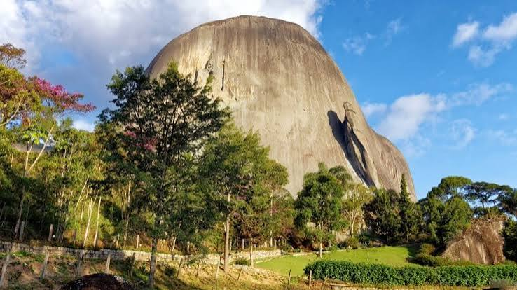
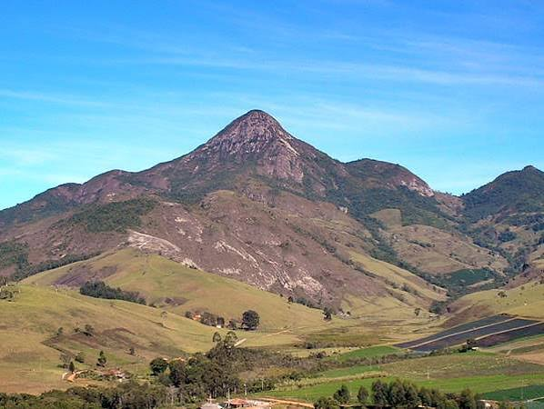
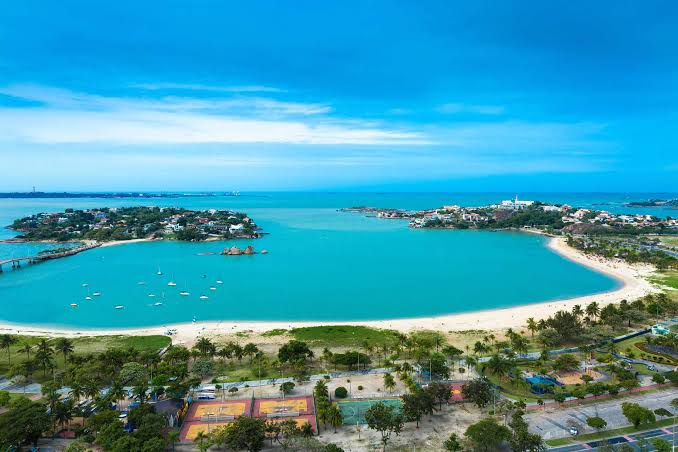

Imagens do Espírito Santo
Confira algumas imagens que representam as praias, cidades, montanhas e paisagens do Espírito Santo.









Sobre as imagens
As imagens acima representam diferentes tipos de paisagens que podem ser encontradas no Espírito Santo, como praias, cidades, montanhas e áreas naturais.
Passe o mouse sobre as imagens para visualizar o efeito da galeria.